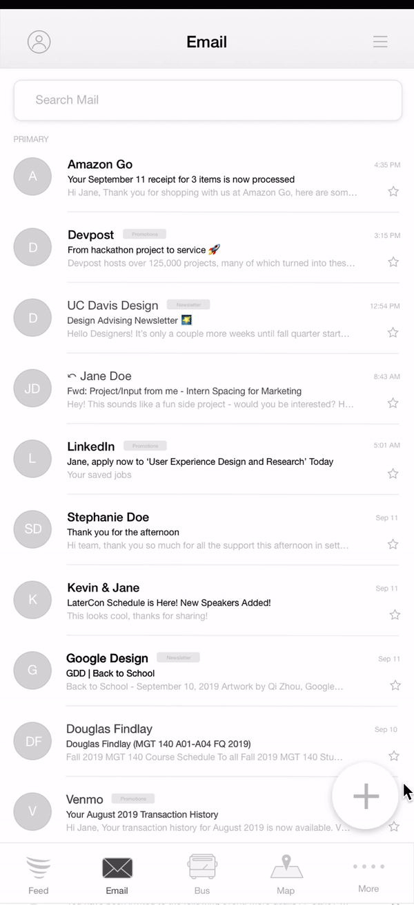
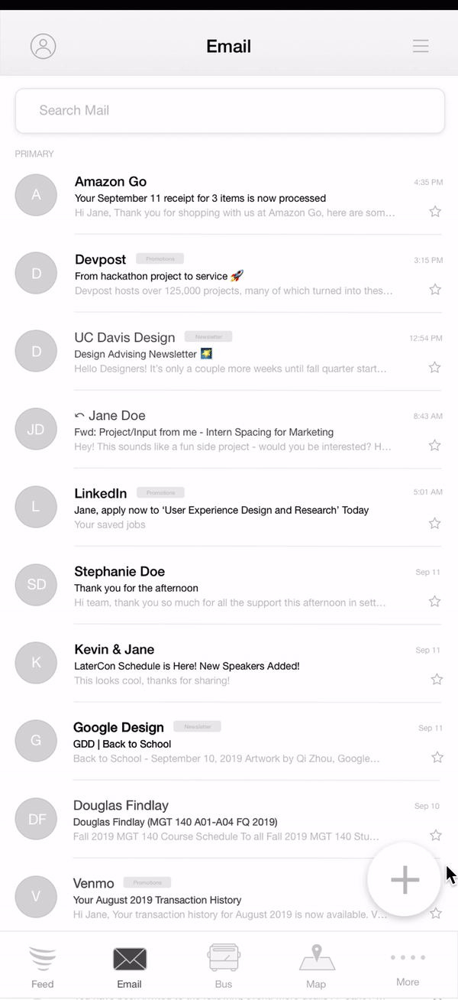
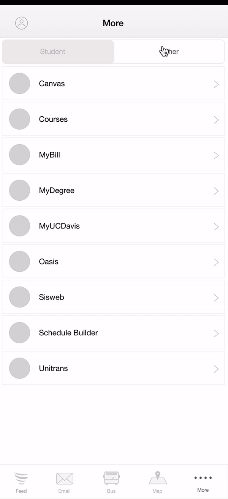
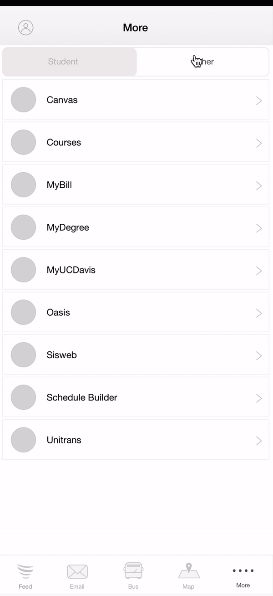
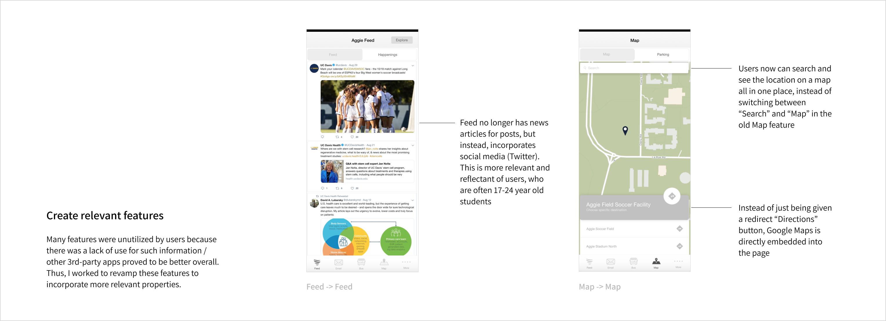
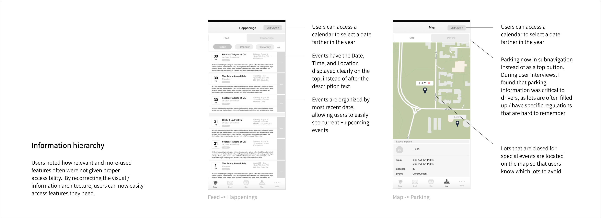
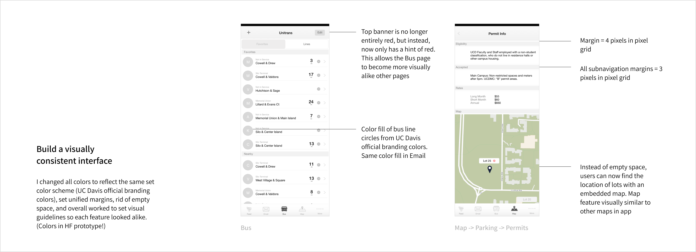
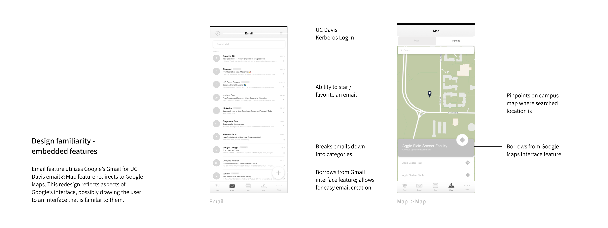
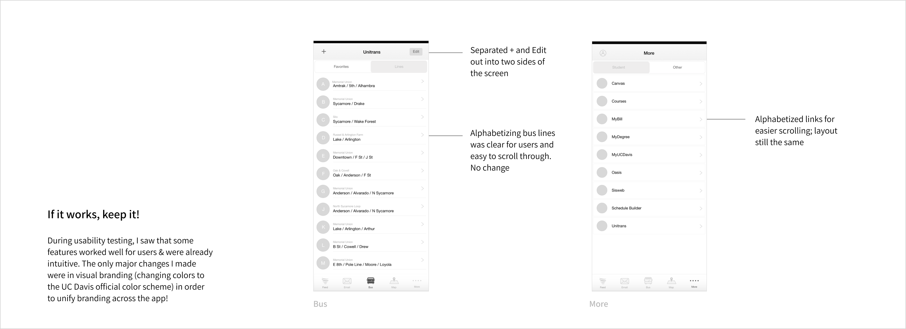

Introduction
UC Davis Mobile is an app connecting Davis students and residents to all things UC Davis and Unitrans buses on one platform.
The app is used daily by thousands of UC Davis students and Davis residents to do everything from checking real-time Unitrans schedules to accessing UC Davis emails, and is one of the few major UC Davis-centered apps on the app store.
The Problem
Shown in the user research below, the app isn't utilized to it's full purpose, as most users only use the Bus feature and fail to use others. These other features (Feed, Email, Map, More) have a confusing and uninspiring interface, aren't reflectant of user needs, and lack any sort of relevancy compared to Bus. Furthermore, among other pain points, features aren't unified under proper visual guidelines, forcing the app to feel like two different apps in one.
Few screenshots of current interface. Left to right: Bus, Feed, Map
Initial User Research
Survey
User Goal Insights
To see if the current app design was successfully meeting user goals, I set out to find exactly what the user goals and most-used app features were through surveys and interviews. Although I was only able to collect a small sample size (n = 10) for the survey, the results echoed what I had expected—that the majority of users utilized the app for bus times / scheduling, with a lack of use for other features such as Feed or Map. In addition, I was able to gather insight about each feature’s common use.
Survey Results:
- What do you use the UC Davis Mobile app most often for?
- Choose all functionalities you have used.
Majority used the app for bus times / scheduling (89.9%) with a few using for Email (11.1%). No one used the app primarily for Map, More, or Feed.
Participants were asked to check off all functionalities of the app they have ever used, even if for a short while. All features, except Feed and More (0) were used. Bus came in first (9), then Map (5), then Email (1).
- Feed
- Allow users to connect in real-time / have a stream of updates from UC Davis organizations
- Promote current and future UC Davis events; give information about these events
- Information hub for UC Davis students to learn about what's happening on campus
- No need to download and use additional email-specific apps (Gmail, etc)
- Get UC Davis emails through @ucdavis.edu
- Map
- Navigate around campus; find location of buildings to find out where they are
- Find parking / permit info—price, lot hours, lot closure
- Bus
- Check bus times and routes / scheduling to navigate around Davis (real-time bus maps, bus routes, schedules, check stops, find nearby buses); travel planning for present or future
- Busing schedules are essential for navigating around Davis (top 3 ways to get around, including bike and car). Students often bus to campus on weekdays for classes and activites
- More
- Redirect page for UC Davis site—it’s hard to remember the long list + URLs of UC Davis affiliated pages, so More helps direct users to these pages instead of having students search on search sites themselves.
Survey results gathered through Typeform
Current Interface Analysis
Usability Testing
User Interviews
With the user goals identified, I set out to see how well these goals were met through usability testing, as well as answer any questions from survey results (Why were Feed, More, Map, and Email not as used? What are lacking from those features resulting in low engagement?). Participants were given 1-2 questions for each feature (Bus, Map, etc) and were encouraged to speak aloud their thought process while navigating through the app. Some prompts given were—
- “Add the T (Davis High) line - Alhambra & Mace stop to Favorites.” (Bus)
- “What are the accepted lots for an L permit?” (Map)
- “Find the Friday schedule for the K (Lake / Arlington / Arthur) line.” (Bus)
- “Are there any events happening this week? If so, what events?” (Feed)
Overall, I found that users were able to complete tasks without issues for Bus, More, and Email, but had more difficulty and a slower completion time for Map and Feed. After these tests, I asked participants follow up questions about their experience and any pain points they found in each feature.
- Feed
- Map
- Bus
- More
For Feed, I found that the stream of posts were often uninteresting for users (explaining the 0% outcome during the survey results). Posts were often news articles that redirected to the UC Davis website—the entire feature could instead be more appealing by instead utilizing social media for posts, allowing the entire space to become more relevant to users. Visually, text boxes were often cramped, which made the words hard to read. The same problem occured for Happening, as users had a frustrating time locating the time / day / place for upcoming events which overall discouraged attendance.
Email did not carry a high use rate on the app, because users often accessed their UC Davis email through more established apps such as Gmail or Mail (iPhone). In addition, the UC Davis Mobile app utilized Gmail in order to show carry emails, yet did not have the same user friendly interface as Google’s Gmail. Overall, email was a redundant feature on the app and had a cramped / static interface.
In particular, for Map, parking was actually one of the most important features there—parking info is often ambiguous / hard to find online, parking is difficult on campus, lots are often filled or closed—yet, was given only a top button that was hard to locate. In addition, the search / map functionality were often unused because of apps like Google Maps that had the same use, yet were built with more accuracy and better designed.
Users often navigated through the Bus feature easily during usability testing, with no major pain points or frustrations. From interviews, I found that trouble with the app did not lie within the design, but with it's backend funtionality—ETA times and real-time maps were often inaccurate and schedules not updated. Design wise, the Bus page felt out of place from the rest of the UC Davis app because of it's emphasis on the red Unitrans color; by visually focusing on this color less in the banner, we could unify the app's visual branding futher. This could encourage users to feel like they are using the app as a whole, instead of just the Bus feature.
Along with Feed, More was one of the lowest used features on the app. For each redirect link, users had to individually fill in their Kerberos ID, which proved to be redundant (a overall log-in function on the page would save time and effort). In addition, More had the potential to carry more UC Davis links (Schedule Builder, MyDegree, etc) which could make the feature become more useful as a redirect page.
In addition, I took notes of specific pain points found during usability testing / user interviews, shown below!

Detailed analysis of current interface.
Users + Audience
Personas
Based on the survey, user interviews, usability testing, and specific pain points found, I created three user types / personas to clarify user needs and frustrations with the app.
Through this, I was able to answer the question, "Who am I designing for?" and see a generalized user in action, allowing me to form clearer generalized pain points and design goals.
Pain Points
Unutilized + irrelevant features
Users often only used the Bus feature on the app, instead of using all the features of the app as a whole (Map, Feed, More, Email). These 4 other features were often substituted by users for 3rd-party apps with a similar purpose (Map -> Google Maps, Feed -> Social Media apps, Email -> Gmail) that were also more user-friendly and familiar. Furthermore, features were often redundant or irrelevant to the users (ex: Feed showing news articles instead of social media posts) adding to the lack of use.
Lack of information hierarchy
Features that had potential of use / were most relevant to users were overshadowed by other, lesser-used features (ex: Parking information more important than Search, yet only given a top button). Another example is in Feed, where the time, location, and date were hard to find, yet should instead be what the user sees first.
Cramped / visually-difficult / inconsistent interface
Text was often difficult to read due to lack of spacing; other pages had too much empty blank space that could instead be spread out for visual clarity. In addition, the Bus page had an interface that was inconsistent with the rest of the other page interfaces (in terms of color, spacing, etc.) hindering the app in having unified branding.
Lack of familiarity in embedded features
The app embeds many additional 3rd-party features such as Gmail and Google Maps. However, the app’s interface given lacks familiarity to Gmail and Google Maps; instead, it is clunky and lacking in many design details. By updating the visual look of feature on the app to reflect these embedded tools, we can bring familiarity to the user and promote engagement.
Competitive Analysis
In order to gain insight about how the current pain points could be fixed, I looked at other competing apps that were built for the same functionality (although, for other UC campus students). UCLA and Berkeley’s mobile apps provide much of the UC Davis mobile app’s features—feed, website links, current / past events—yet, were more utilized by students at their respective campuses.
Some notes drawn from this competitive analysis:
- Both apps have features that reflect on the campus’s strengths: UCLA (dining, athletics) and Berkeley (academics)
- Ability to log into to School Kerberos ID from any page; brings a more immersive school app
- Encompasses a unified school look, and pages have the same visual branding. Done through school colors + possible loading page
- Embed social media into app. Way for users to get school news through social media (possibly Twitter, Facebook, Instagram)—more up to date and relevant to students
Competitive Analysis w/ UCB Mobile and UCLA Mobile.
Information Architecture
During user testing, we found that the organization in the navbar was confusing and unintuitive, so we set on fixing this issue. Below is the current and revised sitemap for comparison. Here are some revisions made:
Feed -> Explore
Explore's list of on-campus groups is now broken down into categories for users to look through, instead of a long, alphabetized list. This allows users to easily add new on-campus groups even with having no-prior information / context.
Map -> Parking
Parking is difficult on campus and lots are often closed for events, so Parking is now moved from the top button to 1 of 2 main pages in Map. Users, during usability testing, found this to be one of the most important features in Map—thus, it is now easy to access just from opening the app.
Map -> Search for Locations
Users can now search for location while having the map to reference on the same page. This allows for easier searching, as they no longer have to go through a long alphabetized list and can now see the location of places.
More -> Student Links
Instead of keeping Student and Other on one page, both are now separated into two different pages allowing for easier access to links. There is also a Log In option on top that allows the user to automatically sign in to their UC Davis Kerberos ID for all redirect links.
Current and revised sitemap.
Low-fidelity Sketches

Mid-fidelity Mockups
Design Justifcations
 


 

Left to right: Feed, Email, Bus, Map, More
    
Branding
All colors are official UC Davis branding colors from UC Davis Marketing Toolbox (https://marketingtoolbox.ucdavis.edu/visual-identity/color.html)
High-fidelity Prototype
Takeaways
Further Work
Reflection
In future iterations of this redesign, I would work on:
- Going through usability testing to see if redesigns were working to their use! This would have greatly helped me in justifying further various design decisions made, as well as work to keep on iterating versions of this redesign.
- Further expand on the Feed feature. I feel as if Feed’s use overall is mundane, because the 1) social aspect and the 2) event calendar aspect are both overshadowed by social media apps and Facebook events / Yelp / Google searches for events near me. By further exploring how to make Feed unique, I would be able to find a new use for the feature and improve engagement.
- Survey from a larger group to more accurately understand the user audience! I was only able to pull 10 survey results for the user research. Although the results reflected my hypothesis, having a larger sample size would be beneficial in providing clearer pain points and seeing user trends / goals.
- UC Davis Mobile carries many, many features that I wasn't able to redesign in my prototypes, such as checking an Email or editing Bus lines. If I had more time, I would work to touch on these as well!
This was the first full redesign I've ever completed alone instead of working on some sort of team! I really had to justify to myself various design decisions / research methodologies made, as well as make sure all were critical + essential for the design process. It was great vocalizing the pain points UC Davis students, as well as I, encounter daily using this app, as well as further interview, wireframe, and work to design solutions for these problems.